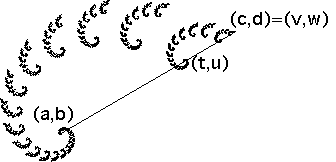
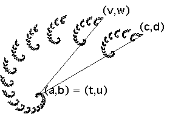

| In general, each transformation is determined by values for r, s, θ, φ, e, and f. A method for finding these is presented in measuring IFS pieces. |
| Our spirals are self-similar, so for each piece
|
| So we must find r, θ, e, and f. |
| To determine these values, select two points |
| To find the parameters for the transformation giving one
of the self-similar pieces of the fractal, in this piece locate the points
|
|  |
To find r, divide the distance
r = dist((t,u),(v,w))/dist((a,b),(c,d))
To find θ, measure the angle between the lines
To find e, measure the horizontal distance between
e = t - a.
To find f, measure the vertical distance between
f = u - b.
Recall that multiplying all e and f values by the same constant simply changes the scale of the picture, not the relative positions of the pieces within the picture. As a first attempt at guaranteeing the image approximately fills the window, divide all e and f values by the maximum of the vertical and horizontal extents of the fractal.
This figure shows the location of
|  |
Return to Spiral Fractals from IFS.